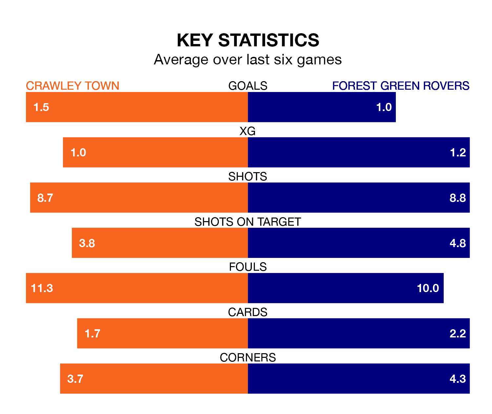

Struggling Forest Green Rovers face Crawley Town away at the Broadfield Stadium on Saturday looking to build on a win in their last league outing.
After securing all three points with a 2-1 victory over Barrow on Tuesday, the Green sit 23rd in EFL League Two.
They travel to play a Crawley side 15th in the standings, who were held in their last match, 1-1 against Walsall.
In the last 10 years, Crawley and Forest Green have played each other on 11 occasions. Crawley won two of them, Forest Green six, and they drew three times.
On average, the Red Devils scored 1.1 goals and the Green 1.8 in those matches.
Their last meeting was on October 28, when Forest Green won 2-1 at home.
With 32 goals in 31 games so far this season, Forest Green are the league's second-lowest scorers with 1.0 goals per game. And they are conceding more than average, letting in 58 goals at a rate of 1.9 per game.
Crawley, meanwhile, are average scorers, with 1.5 goals per game. They have conceded 1.6 goals per game.
Town are in mixed form in EFL League Two, with two wins and a draw from their last six games.
With a win and two draws over that period, Rovers' form is slightly worse – they have taken five points from 18, compared to the Red Devils' seven.
In Danilo Orsi-Dadamo, the hosts have one of the league's most on-form strikers so far this season. He has notched 13 goals in 29 appearances, to sit ninth in the scoring charts.
His goal rate of one every 196 minutes is slightly quicker than that of Mathew Stevens, the Green's top scorer with a goal every 175 minutes, and a total of nine goals in 26 games.
Updated: 12:06 (UTC), 15/02/24